TEXT8, слой 1: linear CKA состояний на одинаковых проверочных событиях. Высокое значение означает сходство представлений; низкое не доказывает статистическую независимость.
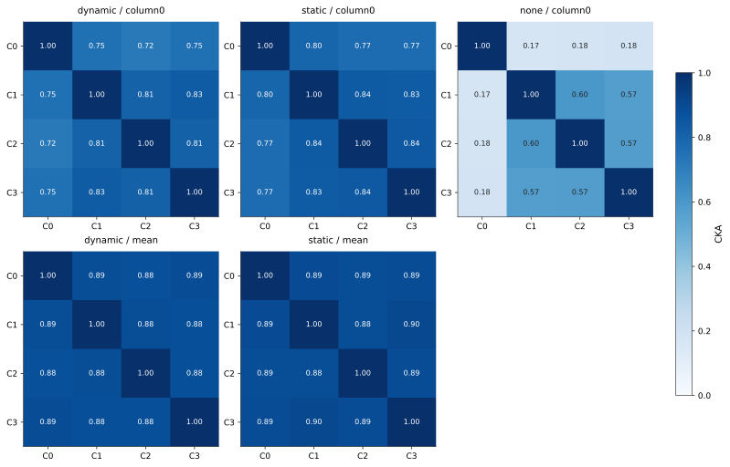
TEXT8, слой 2: linear CKA состояний на одинаковых проверочных событиях. Высокое значение означает сходство представлений; низкое не доказывает статистическую независимость.
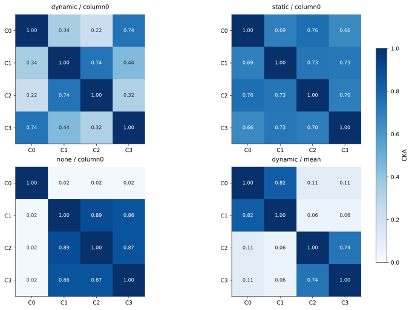
SDQ, слой 1: linear CKA состояний на одинаковых проверочных событиях. Высокое значение означает сходство представлений; низкое не доказывает статистическую независимость.
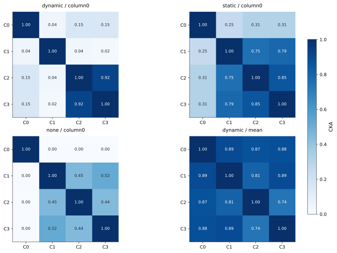
SDQ, слой 2: linear CKA состояний на одинаковых проверочных событиях. Высокое значение означает сходство представлений; низкое не доказывает статистическую независимость.
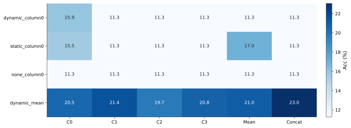
SDQ: accuracy линейного чтения последнего сохранённого значения запрошенного ключа. Включены только запросы с предшествующей записью.
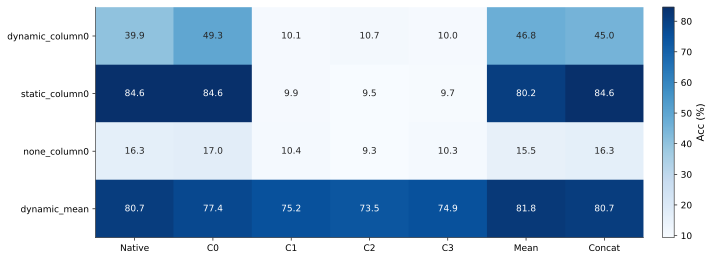
SDQ: accuracy линейного чтения полного ответа задачи, включая distractor accumulator и store/query counters. Native — исходная голова на той же выборке известных записей.
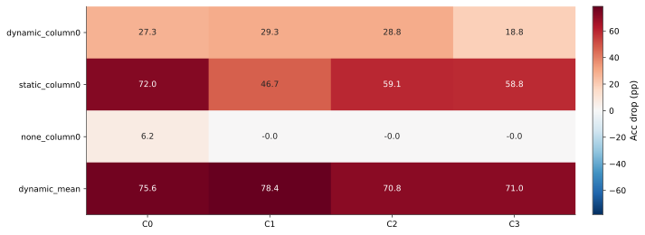
SDQ: перед текущим запросом обнулены оба слоя одной колонки; исходная голова сохранена. Положительное число — падение accuracy. Изменение не переносится на следующие события.
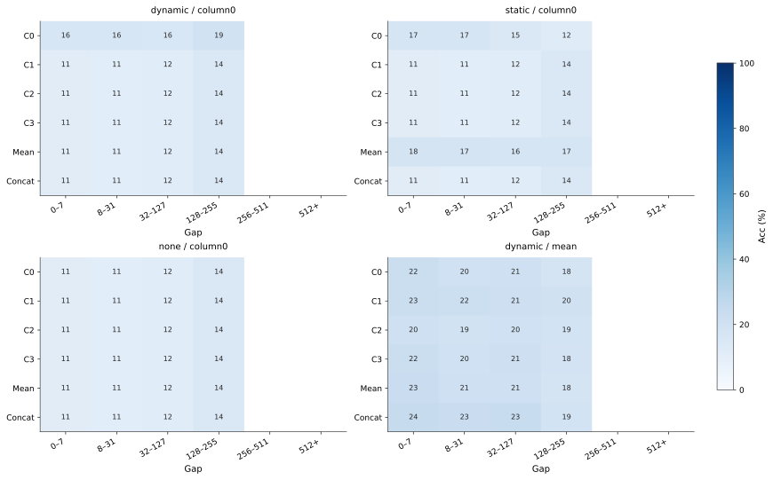
Чтение сохранённого значения на естественных SDQ gaps. В ячейках с менее чем 32 запросами число скрыто. Это интервалы естественных gaps, а не исходный fixed-gap benchmark.
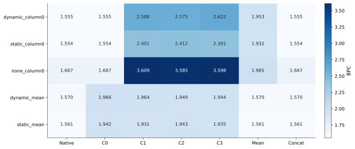
Text8: исходная голова и дополнительные линейные головы на замороженной памяти. Новые головы обучались на train-отрывках; таблица оценивает отдельные validation-отрывки.
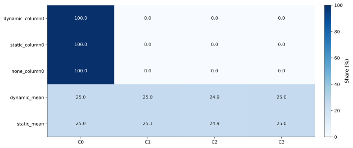
Text8: доли норм четырёх блоков дополнительной concat-головы после учёта масштаба признаков и удаления общего для классов сдвига. Это описание декодера, а не уникальная причинная доля колонки.
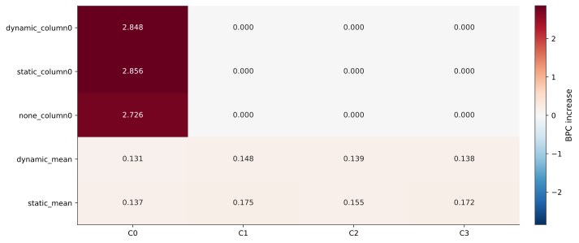
Text8: блок состояния заменён его средним на probe-train; concat-голова не переобучалась. Положительное число — ухудшение. Взаимозаменяемость коррелированных колонок остаётся ограничением.
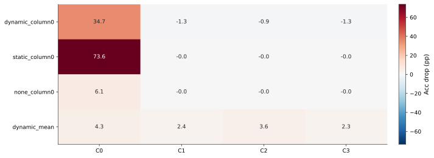
SDQ: замена блока верхнего состояния средним для дополнительной concat-головы полного ответа. Это доступность информации для нового декодера; исходная модель остаётся неизменной.
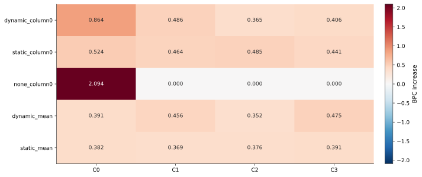
Text8: перед токеном обнуляются оба слоя одной колонки; исходные router и prediction head сохранены. Каждая из 3584 позиций сравнивается со своим неизменным состоянием. Интервенция не переносится на последующие токены.